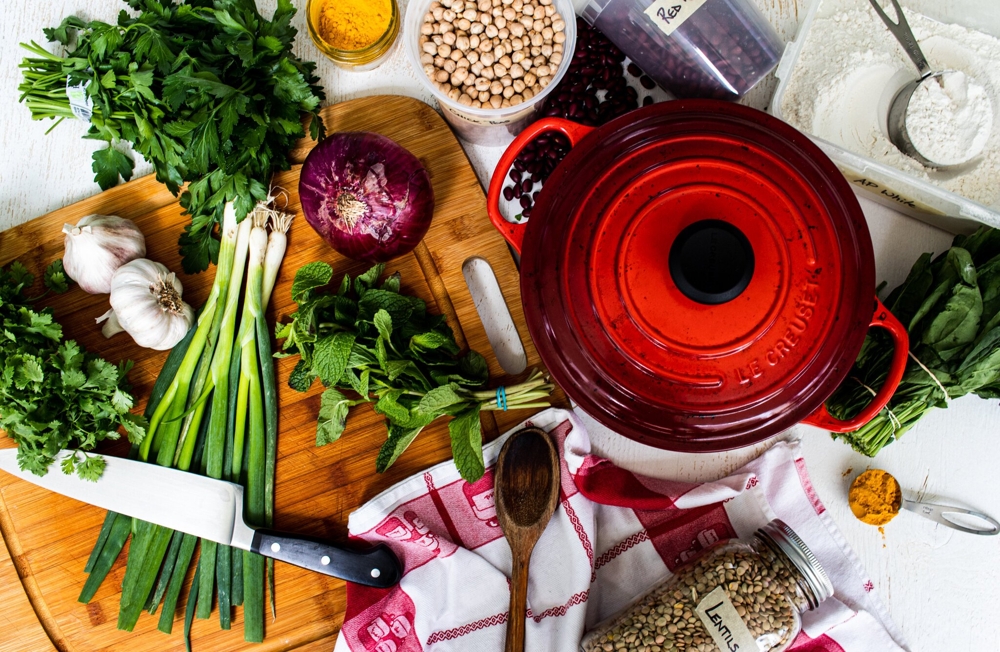

Drawing~
Drawing is one of my biggest personal interests, allowing me to express creativity and bring my imagination to life. Whether sketching detailed portraits or anime characters, it provides a sense of fulfillment and relaxation. It’s also a great way to unwind and release daily stress, helping me stay focused and refreshed.
Gaming Time~
Gaming is my way of diving into different worlds, challenging my skills, and enjoying immersive storytelling. Such as Honkai: Star Rails & Squad Busters. It’s also a great way to relax, unwind, and connect with friends through multiplayer adventures.

Cooking Time~
I enjoy cooking in the kitchen, trying out new recipes and flavors to create delicious meals. Cooking is not just a necessity but also a fun and rewarding way to de-stress and express creativity.
Playing Badminton~
Badminton is my favorite sport, keeping me active and energized while improving my reflexes and coordination. It’s also a great way to have fun with friends and relieve stress after a long day.